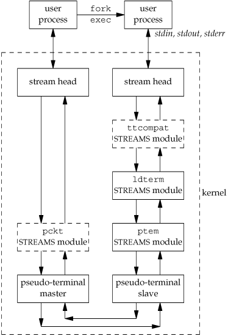
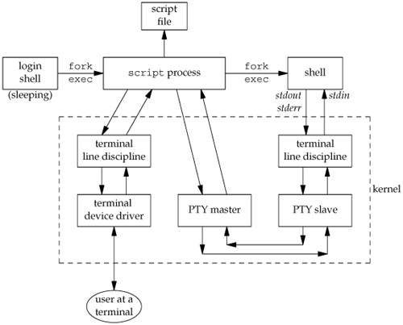
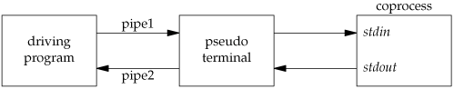
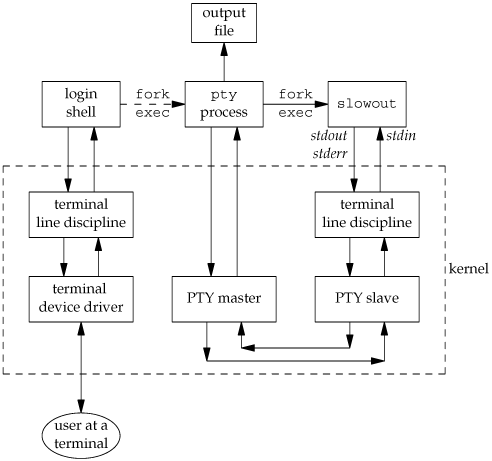

19.2. OverviewThe term pseudo terminal implies that it looks like a terminal to an application program, but it's not a real terminal. Figure 19.1 shows the typical arrangement of the processes involved when a pseudo terminal is being used. The key points in this figure are the following. Figure 19.1. Typical arrangement of processes using a pseudo terminal
Figure 19.1 shows what a pseudo terminal looks like on a FreeBSD, Mac OS X, or Linux system. In Sections 19.3.2 and 19.3.3, we show how to open these devices. Under Solaris, a pseudo terminal is built using the STREAMS subsystem (Section 14.4). Figure 19.2 details the arrangement of the pseudo-terminal STREAMS modules under Solaris. The two STREAMS modules that are shown as dashed boxes are optional. The pckt and ptem modules help provide semantics specific to pseudo terminals. The other two modules (ldterm and ttcompat) provide line discipline processing. Figure 19.2. Arrangement of pseudo terminals under Solaris Note that the three STREAMS modules above the slave are the same as the output from the program shown in Figure 14.18 for a network login. In Section 19.3.1, we show how to build this arrangement of STREAMS modules. From this point on, we'll simplify the figures by not showing the "read and write functions" from Figure 19.1 or the "stream head" from Figure 19.2. We'll also use the abbreviation PTY for pseudo terminal and lump all the STREAMS modules above the slave PTY in Figure 19.2 into a box called "terminal line discipline," as in Figure 19.1. We'll now examine some of the typical uses of pseudo terminals. Network Login ServersPseudo terminals are built into servers that provide network logins. The typical examples are the telnetd and rlogind servers. Chapter 15 of Stevens [1990] details the steps involved in the rlogin service. Once the login shell is running on the remote host, we have the arrangement shown in Figure 19.3. A similar arrangement is used by the telnetd server. Figure 19.3. Arrangement of processes for rlogind server
We show two calls to exec between the rlogind server and the login shell, because the login program is usually between the two to validate the user. A key point in this figure is that the process driving the PTY master is normally reading and writing another I/O stream at the same time. In this example, the other I/O stream is the TCP/IP box. This implies that the process must be using some form of I/O multiplexing (Section 14.5), such as select or poll, or must be divided into two processes or threads. script ProgramThe script(1) program that is supplied with most UNIX systems makes a copy in a file of everything that is input and output during a terminal session. The program does this by placing itself between the terminal and a new invocation of our login shell. Figure 19.4 details the interactions involved in the script program. Here, we specifically show that the script program is normally run from a login shell, which then waits for script to terminate. Figure 19.4. The script programWhile script is running, everything output by the terminal line discipline above the PTY slave is copied to the script file (usually called typescript). Since our keystrokes are normally echoed by that line discipline module, the script file also contains our input. The script file won't contain any passwords that we enter, however, since passwords aren't echoed.
After developing the general pty program in Section 19.5, we'll see that a trivial shell script turns it into a version of the script program. expect ProgramPseudo terminals can be used to drive interactive programs in noninteractive modes. Numerous programs are hardwired to require a terminal to run. One example is the passwd(1) command, which requires that the user enter a password in response to a prompt. Rather than modify all the interactive programs to support a batch mode of operation, a better solution is to provide a way to drive any interactive program from a script. The expect program [Libes 1990, 1991, 1994] provides a way to do this. It uses pseudo terminals to run other programs, similar to the pty program in Section 19.5. But expect also provides a programming language to examine the output of the program being run to make decisions about what to send the program as input. When an interactive program is being run from a script, we can't just copy everything from the script to the program and vice versa. Instead, we have to send the program some input, look at its output, and decide what to send it next. Running CoprocessesIn the coprocess example in Figure 15.19, we couldn't invoke a coprocess that used the standard I/O library for its input and output, because when we talked to the coprocess across a pipe, the standard I/O library fully buffered the standard input and standard output, leading to a deadlock. If the coprocess is a compiled program for which we don't have the source code, we can't add fflush statements to solve this problem. Figure 15.16 showed a process driving a coprocess. What we need to do is place a pseudo terminal between the two processes, as shown in Figure 19.5, to trick the coprocess into thinking that it is being driven from a terminal instead of from another process. Figure 19.5. Driving a coprocess using a pseudo terminal Now the standard input and standard output of the coprocess look like a terminal device, so the standard I/O library will set these two streams to be line buffered. The parent can obtain a pseudo terminal between itself and the coprocess in two ways. (The parent in this case could be either the program in Figure 15.18, which used two pipes to communicate with the coprocess, or the program in Figure 17.4, which used a single STREAMS pipe.) One way is for the parent to call the pty_fork function directly (Section 19.4) instead of calling fork. Another is to exec the pty program (Section 19.5) with the coprocess as its argument. We'll look at these two solutions after showing the pty program. Watching the Output of Long-Running ProgramsIf we have a program that runs for a long time, we can easily run it in the background using any of the standard shells. But if we redirect its standard output to a file, and if it doesn't generate much output, we can't easily monitor its progress, because the standard I/O library will fully buffer its standard output. All that we'll see are blocks of output written by the standard I/O library to the output file, possibly in chunks as large as 8,192 bytes. If we have the source code, we can insert calls to fflush. Alternatively, we can run the program under the pty program, making its standard I/O library think that its standard output is a terminal. Figure 19.6 shows this arrangement, where we have called the slow output program slowout. The fork/exec arrow from the login shell to the pty process is shown as a dashed arrow to reiterate that the pty process is running as a background job. Figure 19.6. Running a slow output program using a pseudo terminal |